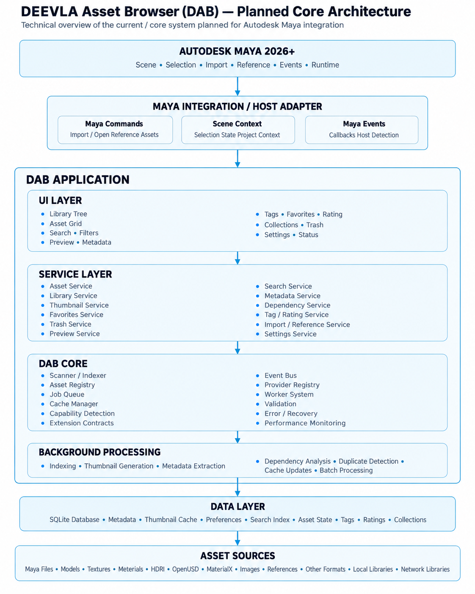
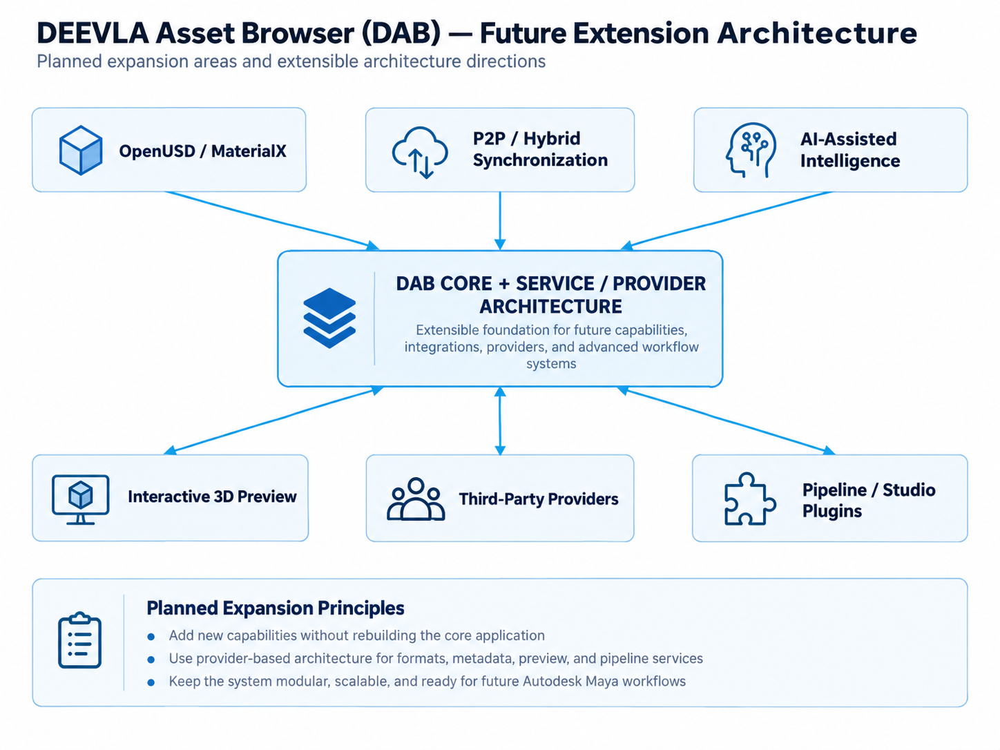
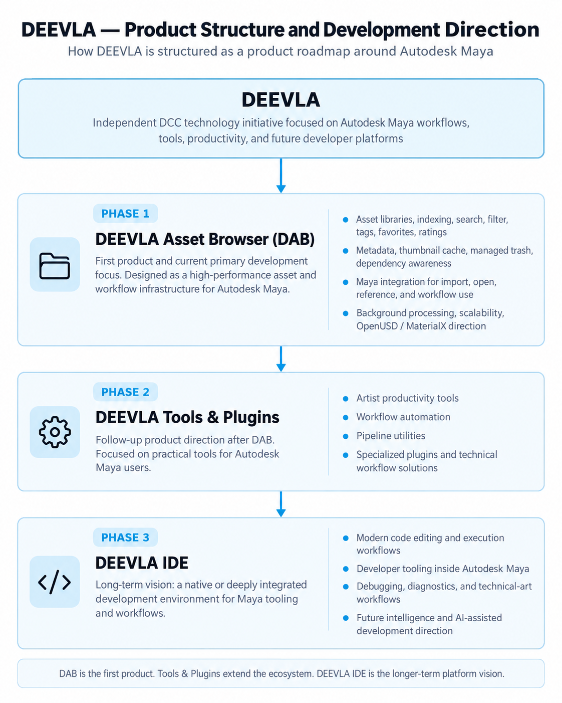

Single independent core
At this early stage, DEEVLA is intentionally kept small and focused so its core technology, product architecture, engineering standards, and long-term direction can be established carefully before the team expands.
DEEVLA is an independent DCC technology initiative focused on improving digital content creation workflows. Its first product, DEEVLA Asset Browser (DAB), is being developed as a high-performance asset and workflow infrastructure for Autodesk Maya. Beyond DAB, DEEVLA's product direction includes artist tools, plugins, workflow automation, and a deeply integrated Maya-native IDE for tool and pipeline development.
DEEVLA began as an independent effort to explore better ways of working inside modern DCC environments. The first DAB concept and early prototypes began in 2025. More focused and structured development began in August 2026 as DAB became the first product under the DEEVLA initiative.
DEEVLA is currently developed by its founder as an independent project. Certain visual assets, such as selected icons, may receive occasional voluntary creative contributions from external collaborators. These contributors are not employees or members of the DEEVLA development team.
DEEVLA is currently a founder-led independent development initiative, with Riyadus Solihin serving as its founding developer and the primary person responsible for product direction, research, workflow design, prototyping, development, and validation.
At this early stage, DEEVLA is intentionally kept small and focused so its core technology, product architecture, engineering standards, and long-term direction can be established carefully before the team expands.
Current Team: 1 founder. Employees: 0. Selected visual assets may receive occasional voluntary creative contributions from external collaborators, but those contributors are not employees or members of the DEEVLA development team.
Team growth is intended to follow real product and engineering needs rather than expanding prematurely. The goal is to keep development focused, maintainable, and technically disciplined.
As DEEVLA products mature and the development scope grows, the initiative may recruit software developers, technical artists, UI/UX specialists, pipeline engineers, QA/testing specialists, and other professionals whose expertise matches the requirements of future products.
The long-term objective is to build a capable professional development team that can create reliable, production-oriented tools, plugins, workflow technologies, and developer solutions for Autodesk Maya users and the broader Autodesk ecosystem.
DEEVLA is currently being built from a single independent core. The intention is not to remain permanently as a one-person project, but to establish a strong technical and product foundation first. As the initiative grows, DEEVLA aims to evolve into a professional development team capable of supporting multiple Autodesk Maya products and long-term DCC technology development.
DEEVLA Asset Browser is the first product being developed by DEEVLA for Autodesk Maya. DAB is not intended to be only a thumbnail browser. It is being designed as an asset and workflow layer that helps artists and technical users organize, discover, inspect, manage, and use production assets efficiently while minimizing interruptions to Maya's creative workflow.
DAB targets large asset libraries, fast discovery, persistent metadata, background processing, scalable indexing, and responsive interaction inside a Maya-centered workflow.
Planned Maya workflows include import, open, reference, scene-context awareness, Maya commands, and supported scripting/API integration.
Expensive operations such as indexing, thumbnail generation, metadata extraction, and dependency analysis are intended to run through background job systems where appropriate.
The following areas represent the planned capability direction for DAB. Features are being developed incrementally; items listed here describe the product roadmap and technical direction rather than claiming that every capability is already complete.
DAB is intentionally not built around a single programming language. The planned architecture uses different technologies for the jobs they are best suited to. Python provides direct, flexible integration with Autodesk Maya and rapid extension of artist workflows, while C++ is reserved for performance-sensitive native core operations where throughput, memory efficiency, and low overhead matter. The two layers are connected through a controlled binding layer so DAB can remain both fast and maintainable.
| Technology | Role in DAB | Why it is used |
|---|---|---|
| Python | Maya host integration, application orchestration, commands, extensibility, services, and workflow logic. | Python is deeply established in Maya pipelines, allows rapid development, and keeps artist/pipeline extensions accessible. |
| PySide6 / Qt6 | Dockable Maya UI, library views, asset grids, search/filter controls, metadata panels, settings, and user interaction. | Provides a modern Qt interface that can integrate naturally with supported Maya desktop workflows. |
| Modern C++ | Performance-critical native core operations such as heavy scanning/indexing workloads, hashing, cache processing, and other compute-heavy tasks where profiling justifies native code. | Keeps expensive operations fast while avoiding the cost and complexity of moving the entire application into C++. |
| pybind11 | Controlled bridge between the C++ native core and Python application / Maya integration layer. | Allows a small, focused native surface instead of a large custom C++ wrapper architecture. |
| SQLite | Local asset index, metadata, tags, ratings, collections, search state, and migration-managed persistence. | Reliable embedded persistence without requiring a separate database server for normal desktop use. |
| Maya Python / OpenMaya APIs | Scene context, selection, events, import/open/reference operations, callbacks, host capabilities, and Maya-aware actions. | Provides direct integration with the Maya runtime instead of treating Maya as only an external file target. |
| OpenUSD / MaterialX | Planned interoperability direction for modern scene, asset, and material workflows. | Supports a more open and pipeline-friendly future rather than locking the asset system to a single proprietary representation. |
Maya host integration, UI, services, core systems, native acceleration, persistence, and asset providers are separated to keep responsibilities clear and reduce tightly coupled code.
Scanning, indexing, thumbnail generation, metadata extraction, duplicate detection, and other expensive operations are designed to use job/worker systems where safe so Maya remains responsive.
C++ is used selectively for measured performance needs. DAB avoids creating a large native wrapper when Python can provide the same function cleanly and maintainably.
The target is one maintainable codebase for Maya 2026 and later, with a host/compatibility layer and capability detection rather than scattered version checks or separate forks.
Search, metadata, preview, formats, pipeline integration, and future studio extensions are planned around explicit service/provider contracts so capabilities can grow without rebuilding the core.
The direction includes versioned data migrations, regression testing, error recovery, dependency and license review, performance measurement, and packaging designed for commercial distribution.
Engineering objective: DAB is being designed using production-grade software engineering practices commonly used in professional tools and pipeline development: modular boundaries, explicit contracts, measured native acceleration, persistent data migrations, background processing, compatibility isolation, testing, and maintainable extension points.
DAB is designed around a simple artist-facing flow while handling indexing, metadata, caching, and analysis behind the scenes.
DAB is currently focused on direct desktop integration with Autodesk Maya. The initial technical direction uses Python and Maya-supported scripting/API interfaces. Native components may be introduced only where performance-critical operations justify them, while keeping the integration architecture modular and maintainable.
Maya-specific commands, callbacks, host detection, scene context, and compatibility behavior are separated from DAB's core services to avoid scattering host-version logic throughout the application.
DAB targets Autodesk Maya 2026 and later using capability detection and a compatibility layer rather than maintaining separate source forks for every Maya version.
The development approach is Python-first for Maya integration and extensibility, with native code reserved for operations that genuinely benefit from lower-level performance.
The architecture separates Maya integration, UI, services, core systems, background processing, data persistence, and asset sources so that DAB can grow without tightly coupling every subsystem.

DAB is being structured around service/provider contracts so that future capabilities can be added without rebuilding the entire core application.

The first product and current primary development focus. A high-performance asset and workflow infrastructure designed around Autodesk Maya.
After DAB, DEEVLA plans to develop additional artist productivity tools, workflow automation, pipeline utilities, specialized plugins, and technical workflow solutions for Autodesk Maya users. One major direction is the DEEVLA Smart Modeling Toolkit, a context-aware modeling tool family built around topology, curvature, selection, symmetry, validation, and artist intent.
Long-term vision: a native-feeling, deeply integrated development environment for Autodesk Maya, designed for building, running, testing, debugging, diagnosing, and managing Maya tools and workflows directly inside the DCC environment, with modern editing, Maya-aware intelligence, runtime context, and future AI-assisted development capabilities.

After DAB, one of DEEVLA's major product directions is a family of focused Maya tools and plugins. A key concept is the DEEVLA Smart Modeling Toolkit: modeling operations that inspect topology, curvature, normals, selection context, symmetry, boundaries, and production intent before applying an operation. The goal is not to hide Maya, but to make repetitive modeling decisions faster, safer, and more context-aware while keeping the workflow lightweight and familiar to Maya artists.
Move beyond one-command/one-result behavior by evaluating the current mesh and selection before suggesting or applying the most appropriate modeling operation.
Automate common preparation, cleanup, alignment, validation, topology checks, and repetitive parameter decisions so artists can spend more time on shape and design.
Bring selected procedural and context-driven ideas into Maya without trying to turn Maya into another DCC. Tools should remain fast, focused, undoable, predictable, and familiar to Maya users.
Priority package concept: Smart Boolean, Smart Cleanup, Smart Topology Flow, Smart Selection, and Smart Modeling Assistant can form the first focused subset of the DEEVLA Smart Modeling Toolkit. “Smart Cleanup” and “Smart Topology Flow” act as umbrella systems that combine several of the specialized analysis and repair ideas below.
DEEVLA's longer-term platform vision is a native-feeling, deeply integrated IDE for Maya tool and pipeline development. Instead of forcing developers and technical artists to choose between Maya's built-in Script Editor and an external IDE that cannot fully understand the live scene, DEEVLA IDE is intended to combine a modern development experience with direct access to Maya's runtime, selection, scene state, commands, callbacks, and APIs.
Excellent for immediate scripting and runtime access, but its role is intentionally lighter than a full modern development environment.
Powerful editing and project tooling, but live Maya context normally requires extra bridges, remote execution, or separate debugging setup.
Bring modern development capabilities into a Maya-integrated workspace so code, runtime state, tool UI, output, diagnostics, and scene context can work together.
High-performance editor direction with syntax handling, multi-document workflows, search/replace, code navigation, command palette, shortcuts, sessions, and project/workspace organization.
Planned completion, signatures, hover information, diagnostics, navigation, and code actions that can combine static source intelligence with Maya-specific runtime context.
Direct Python/MEL document and selection execution, integrated output console, traceback/error handling, diagnostics, and faster iteration without constantly moving between Maya and another application.
The IDE can be designed to understand the active Maya version, scene, selection, host capabilities, commands, and tool context — information an ordinary external text editor does not automatically possess.
Future direction includes reusable DEEVLA UI framework components, integrated tool development, visual Tool Designer concepts, and AI-assisted UI generation for Maya tools.
AI assistance is envisioned as part of the development workflow rather than only a chat panel: code/tool generation, diagnostics, contextual suggestions, refactoring support, and Maya-aware assistance can use project and runtime context when appropriate.
Why build it? Maya developers frequently move between code editors, Script Editor output, Maya documentation, scene inspection, UI testing, and runtime debugging. A Maya-integrated IDE can reduce this context switching and make the development loop — write → run → inspect → diagnose → refine — significantly more direct.
DEEVLA is not currently using Autodesk Platform Services (APS) APIs. The current development focus is direct desktop integration with Autodesk Maya. APS may be evaluated in the future only if a specific product requirement benefits from it.
DEEVLA is applying to ADN to develop and validate Maya-integrated products in the appropriate Autodesk development environment and to gain access to the technical resources needed to build reliable, maintainable integration with Autodesk Maya.
Access to the appropriate Autodesk Maya development and testing environment for building and validating DEEVLA products.
Developer documentation, API guidance, technical resources, and support for Maya integration and compatibility.
Testing DAB and future DEEVLA products across supported Autodesk Maya environments as the product evolves.
DEEVLA is a fully independent development initiative founded on original ideas, research, and innovation. It is developed independently and is not affiliated with, sponsored by, or created on behalf of any external studio or company.
DEEVLA is founded by Riyadus Solihin, a 3D professional with extensive Autodesk Maya experience, particularly in modeling and production workflows. His interests include DCC technology, workflow innovation, artist productivity, artificial intelligence, product development, and the practical application of emerging technology.
Indonesia
Team Size: 1
Employees: 0
Company Email riyadus@deevla.com